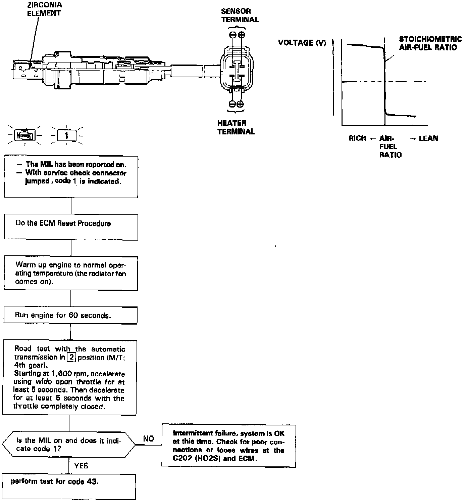

DTC 1
The Malfunction Indicator Lamp indicates Diagnostic Trouble Code 1: A problem in the Heated Oxygen Sensor circuit.

The Heated Oxygen Sensor detects the oxygen content in the exhaust gas and signals the engine control module. In operation, the engine control module receives the signals from the sensor and varies the duration during which fuel is injected. The Heated Oxygen Sensor has an internal heater. The heater stabilizes the sensor's output. The Heated Oxygen Sensor is installed in the exhaust manifold.